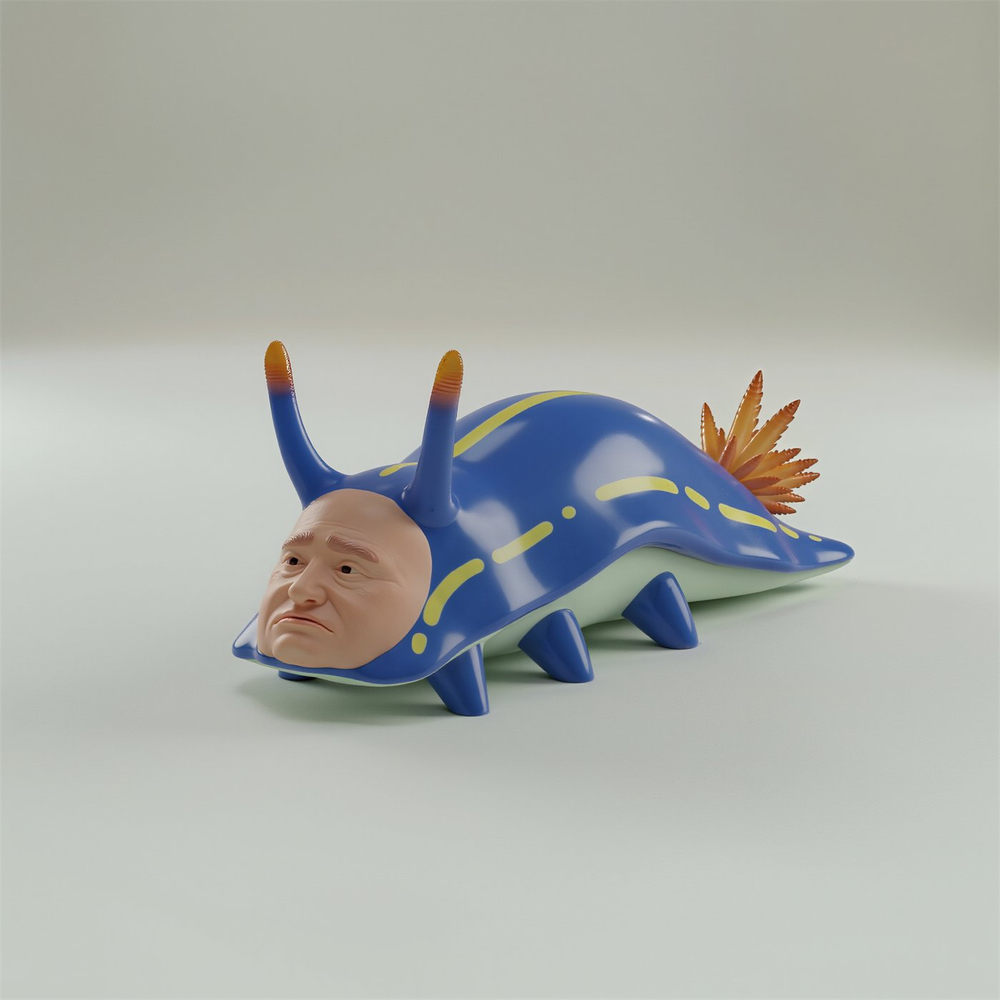
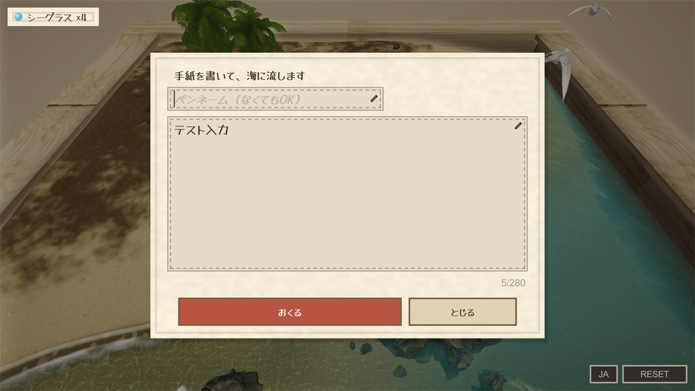

The game was finished. Feeding worked, molting worked, the letters were going out to real players and coming back. All that was left was producing a WebGL build.
The build did not fail. Unity Editor closed.
No error dialog, no message in the console, no partial output. The editor process was simply gone and the output folder was empty. I ran it again to see whether it was a fluke. It died in the same place.
Why an empty error is worse than a loud one
A compile error tells you where to look. This gave me nothing, because it was not a failure inside my game code at all. It was a native crash in the editor while it was chewing through assets and references in the scene, before it ever got to the part where my code matters.
Which means the usual instinct is wrong. I spent the first stretch re-reading scripts, and none of that was ever going to help. The problem was in what the scene was dragging along with it.
What I went through, in order
| Suspect | Why it matters for a WebGL build |
|---|---|
| Leftover assets | Things I had stopped using but never deleted still get processed |
| Render pipeline mismatch | Materials authored against a different pipeline than the project now targets |
| Texture sizes | Source textures far larger than anything the game actually displays |
| Prefab references | Prefabs still referenced from the scene, pulling their whole dependency chain into the build |
Working through that list one item at a time is unglamorous and it is also the entire fix. There was no clever trick at the end of it. The build went through once the scene stopped carrying things it did not need.
If you are hitting the same wall: stop looking at your scripts. An editor that dies rather than erroring is telling you the problem is upstream of your code.
The creature I cut, and why
The crash was the last problem. The first one was that this was supposed to be a different game entirely.
The original plan was a creature with a human face, heavily inspired by Seaman. A face visible inside the egg, and that same face carried through every later form.

Two things killed it.
The first was rigging. I wanted a sea slug that moved with an insect's twitchiness, and I could not get that out of the rig no matter how long I spent on it. It kept coming out smooth and pleasant, which was the opposite of the point.
The second reason is the one I would actually pass on to someone else. I built the island in Unity, put the creature on it, and looked through the real game camera instead of at concept art. What I saw was not a face. It was a small silhouette wandering around at a distance, because that is what a player looking at an island actually sees.
All the work was in a detail nobody would be looking at. So growth moved from the face to the things you can read at that distance: how it walks, and how much space it takes up.
The island started out brown

This is what it looked like before it looked like anything. Brown ground, brown water, some rocks and plants, and a white egg sitting in the middle of it. The edges of the box were the most visible thing on screen. It read less like a beach than like a prototype aquarium.
Getting from there to something you can idle on was a long tail of small passes: sand colour, where shallow water becomes deep water, the line where the waves break, rock placement, tree shade, birds, fish. None of it was about making the screen impressive. It was about making it somewhere you would leave open for a while with nothing happening.
Growth is a molt, not a level-up

The creature ended up built around a crab. Feeding pushes growth along, but hitting the threshold does not transform it on the spot.
Instead, at some point while it is calmly going about its day, it molts. The old shell is left on the sand and something different walks away from it.
That delay is the whole design. A number going up is not a feeling. Looking back at the island and realising the thing walking around on it is not the thing that was there this morning is a feeling.
Letters, and everything that comes with strangers

Raising a creature on your own leaves the game sealed inside your browser tab. The bottled letters exist to put a crack in that.
What you write goes to another person playing the game. You do not choose who. It drifts, it washes up somewhere, and if a reply comes back it arrives the same way, whenever it happens to arrive. Reading a letter and returning it to the sea gives you sea glass, which is what food costs, so the social half feeds the raising half.
The moment you let strangers write to each other you inherit a second job. There is a word filter, a cap on how often you can send, and a report button on every letter. Text input also turned out to be its own small project: getting Japanese input and backspace behaving correctly inside a WebGL canvas, on desktop and on phones, is not free.
What it cost, and what is next
| Item | Detail |
|---|---|
| Build time | About one month |
| Abandoned direction | Human-faced creature, cut after rigging and camera tests |
| Hardest technical problem | The WebGL build crashing the editor with no error |
| Hosting | GitHub Pages over HTTPS, embedded in an iframe |
The project landed a long way from where it started. A game about talking to a face became a game about watching a crab and writing to strangers.
Now that the server side for letters exists, the direction I want next is more presence: players moving around inside the same island, with the uglier creatures, able to talk to each other there. Leaning harder into the online half rather than the idle half.
Creature Raising Kit is free in the browser, no install and no account.